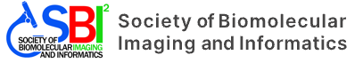

Skip to content

About Us
What is SBI2
Leadership
Alumni
Code of Conduct
Resources
Education Materials
Communities and Educational Links
Publications
Conferences
2026 Premier European Meeting
2026 SBI2 Conference (Boston)
Past Conference Programs
Past Conference Recordings
Menu
About Us
What is SBI2
Leadership
Alumni
Code of Conduct
Membership
Membership
Register
Login
Resources
Education Materials
Communities and Educational Links
Publications
Conferences
2026 Premier European Meeting
Past Conference Programs
Past Conference Recordings
Latest News
Contact Us
© The Society of Biomolecular Imaging and Informatics
Cell Painting for cytotoxicity and mode-of-action analysis in primary human hepatocytes
First readout from the OASIS consortium
Publication Date:
March 11, 2025
Publication Link:
https://dx.doi.org/10.1101/2025.01.22.634152